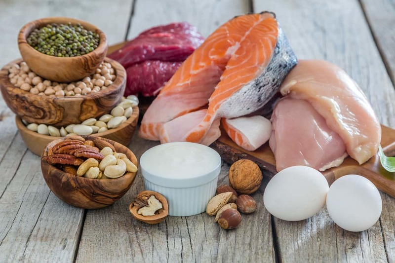

อาหารหมู่ที่ 1 โปรตีน
สำหรับอาหารหมู่ที่ 1 นั้นประกอบไปด้วยอาหารประเภทเนื้อสัตว์ นม ไข่ และถั่วต่างๆ ซึ่งอาหารประเภทนี้จะให้สารอาหารประเภทโปรตีนแก่ร่างกาย เพื่อให้ร่างกายมีความเจริญเติบโต อีกทั้งยังทำให้ร่างกายมีความแข็งแรงขึ้นอีกด้วย ไม่เพียงเท่านั้น มันยังทำหน้าที่ช่วยเสริมภูมิต้านทานเพื่อป้องกันโรคให้แก่ร่างกายได้เป็นอย่างดี
สำหรับร่างกายที่ได้รับบาดเจ็บจากการเกิดอุบัติเหตุจนทำให้ร่างกายเกิดการสึกหรอ สารอาหารเหล่านี้ก็ช่วยซ่อมแซมในส่วนนั้นได้ดีทีเดียว ในส่วนของอาหารประเภทนี้ยังถูกนำไปสร้างกระดูก เลือด กล้ามเนื้อ ผิวหนัง น้ำย่อย เม็ดเลือด และฮอร์โมน รวมทั้งภูมิต้านทานเชื้อโรคต่างๆ ดังนั้นจึงถือว่าอาหารที่อยู่ในหมู่ที่ 1 นี้ จัดเป็นอาหารหลักที่มีความสำคัญในการสร้างโรคงสร้างของร่างกายในการเจริญเติบโต และช่วยทำให้อวัยวะต่างๆ ในร่างกายสามารถทำงานได้เป็นปกติยิ่งขึ้น
ประเภทของสารอาหารหมู่ที่ 1สารอาหารที่อุดมอยู่ในอาหารหมู่ที่ 1 นั้นก็คือ โปรตีน ซึ่งโปรตีนจะประกอบไปด้วยสารเคมี 2 ชนิดด้วยกันคือ
1. กรดอะมิโนจำเป็น คือ กรดอะมิโนที่ร่างกายไม่สามารถสร้างขึ้นมาเองได้ ดังนั้นร่างกายจึงต้องได้รับกรดอะมิโนประเภทนี้จากการรับประทานเข้าไป
2. กรดอะมิโนที่ไม่จำเป็น คือ กรดอะมิโนที่ร่างกายได้รับจากการรับประทานอาหาร และยังได้รับจากการสร้างขึ้นมาเองของร่างกายอีกด้วย
ประโยชน์ของสารอาหารหมู่ที่ 11. โปรตีนเป็นสารอาหารที่มีความจำเป็นต่อการเจริญเติบโตของร่างกาย
2. ร่างกายมีความต้องการโปรตีนอยู่เสมอเพื่อนำโปรตีนไปซ่อมแซมเนื้อเยื่อในส่วนที่สึกหรออยู่ทุกวัน
3. โปรตีนมีส่วนช่วยรักษาดุลน้ำ เพราะโปรตีนที่มีอยู่ในเซลล์และหลอดเลือดจะช่วยรักษาปริมาณน้ำในเซลล์และหลอดเลือดให้อยู่ในเกณฑ์ที่มีความเหมาะสม
4. ช่วยรักษาดุลกรด – ด่างของร่างกาย เนื่องจากกรดอะมิโนนั้นจะมีหน่วยคาร์บอกซีลที่มีฤทธิ์เป็นกรดและเป็นด่าง ดังนั้นโปรตีนจึงมีคุณสมบัติช่วยรักษาดุลกรด – ด่างนั่นเอง และนั่นก็ถือเป็นสิ่งสำคัญต่อการเกิดปฏิกิริยาต่างๆ ภายในร่างกาย
ถ้าร่างกายขาดโปรตีนจะมีผลอย่างไรโปรตีนเป็นสารอาหารที่มีความสำคัญต่อร่างกายเป็นอย่างมาก โดยเฉพาะการช่วยเสริมสร้างการเจริญเติบโตของร่างกายและซ่อมแซมส่วนที่สึกหรอ ดังนั้นเมื่อขาดโปรตีนหรือได้รับโปรตีนจากอาหารน้อยเกินไป ก็จะมีผลต่อร่างกายดังต่อไปนี้
- กล้ามเนื้ออ่อนแรง มีอาการเหน็บชา และเป็นตะคริวบ่อยครั้ง
- รู้สึกอ่อนเพลีย เจ็บป่วยง่าย ในผู้หญิงอาจพบปัญหาประจำเดือนมาไม่สม่ำเสมอ
- ผิวแห้ง ผมเสียขาดความเงางาม เล็บเปราะบาง แตกหักได้ง่าย
- มีอาการทางระบบประสาท ความจำไม่ดี จดจำอะไรไม่ได้ คิดอะไรไม่ออก ร่วมกับมีความรู้สึกหดหู่ กังวลใจ
- หาดขาดโปรตีนในวัยเด็ก จะส่งผลให้เด็กมีร่างกายแคระแกร็น ไม่สามารถเจริญเติบโตได้เต็มที่เหมือนกับเด็กในวัยเดียวกัน